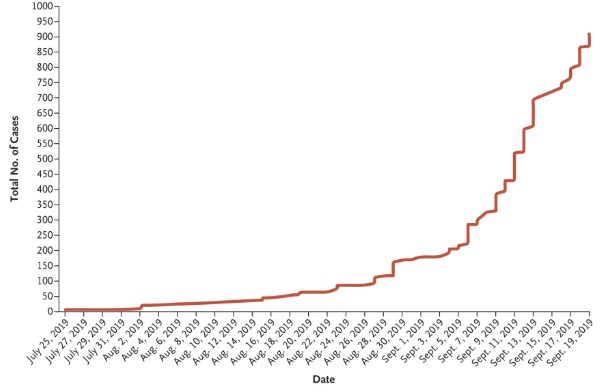

L’hypothèse d’une fuite de laboratoire, qui était il y a encore quelques semaines rangée d’emblée au rang des théories conspirationnistes, est désormais reprise par presque toute la presse comme une piste plausible pour expliquer l’émergence de Covid-19 (#1, #2, #3, #4). Malheureusement, en se focalisant exclusivement sur le laboratoire de Wuhan, les médias français jouent le jeu de l’administration Trump et semblent oublier qu’une telle fuite aurait pu se produire partout dans le monde.
Or, comme je l’indiquais dans mon précédent billet intitulé “Origines de la pandémie: pourquoi faut-il s’abstenir d’accabler la Chine?” (#5), l’origine wuhanaise du virus reste incertaine et les États-Unis sont eux aussi sur la liste des suspects potentiels, si l’hypothèse d’une fuite de laboratoire est retenue. En effet, tout comme la Chine, les Américains sont extrêmement actifs en matière de recherche sur les coronavirus de chauve-souris. Si le laboratoire de Ralph Baric de l’université de Caroline du Nord est certainement le plus médiatisé en raison d’expériences polémiques visant à rendre ces virus plus agressifs pour l’homme (#6, #7), bien d’autres organisations travaillent sur le sujet. Au-delà des universités et sans compter les entreprises pharmaceutiques, les coronavirus sont étudiés depuis plus de dix ans par l’armée américaine (nous y viendrons) et par certaines entitées privées dont Ecohealth Alliance (#8, #9) — spécialisée dans la découverte de nouveaux virus chez la chauve-souris et qui a publié à elle seule plus de cinquante articles scientifiques sur la question depuis 2013 (#10).
Je me propose aujourd’hui d’approfondir cette piste américaine, en espérant que cela permettra de rééquilibrer un peu les débats, qui penchent dangereusement vers une forme d’atlantisme primaire teinté de conspirationnisme. Mais je suis bien conscient qu’il s’agit d’un sujet sensible, dont le propos est facilement “récupérable” pour alimenter d’autres théories de type conspirationniste. Ce billet ne saurait donc se passer d’une mise en garde préliminaire.
Les faits articulés ci-dessous sous forme de chronologie ne doivent en aucun cas être interprétés comme un faisceau de preuves. Il ne s’agit que d’illustrer une hypothèse parmi d’autres, qui demande à être testée formellement. La juxtaposition temporelle d’événements ne saurait impliquer l’existence d’un lien de causalité. Il faut aussi éviter de se laisser convaincre par la multiplication d’informations convergentes, car ces informations ont été choisies pour supporter la plausibilité d’une hypothèse particulière. Elles souffrent donc d’un biais de sélection important. Enfin et surtout, il ne faut pas oublier que des centaines de publications scientifiques suggèrent que l’émergence du virus est très certainement naturelle et qu’une erreur humaine est au contraire improbable. On sait que les humains côtoient les chauve-souris sur tous les continents, on sait que les transmissions animal-homme sont fréquentes et l’on connaît les mécanismes généraux qui gouvernent ce processus.
J’encourage les lecteurs attirés comme moi par l’examen des scénarios alternatifs à faire la part des choses entre les enjeux politiques qui entourent l’hypothèse d’une potentielle sortie de laboratoire et la démarche médico-scientifique pour qui cette hypothèse est aussi improbable qu’inutile en matière de lutte contre la pandémie elle-même. Celle-ci se joue dans la recherche de traitements et de vaccins efficaces, qui ne dépendent pas de la nationalité du virus.
Mi-juillet 2019, Épidémie de pneumonie inexpliquée en Virginie
Le 11 juillet 2019, une épidémie de pneumonie se déclare dans une maison de retraite en Virgine, sur la côte est des États-Unis (#11, #12). Avec 63 résidents et 19 membres du personnels infectés (3 morts), l’événement est suffisamment sérieux pour être rapporté au Center for Disease Control (CDC) qui supervise la veille épidémiologique au niveau fédéral. Cependant, d’après le rapport du comté de Fairfax (#13), le CDC ne parvient pas à en isoler la cause et seul le virus du rhume est retrouvé chez une minorité de patients.
D’autres événements similaires se produisent à proximité et les services de santé de Virginie signalent entre 16 et 19 épidémies locales de maladies respiratoires durant l’été 2019 (#14, #15, #16), ce qui constitue un bilan anormal pour ce petit état de la côte est américaine.
Août 2019, début de l’épidémie de pneumonie attribuée au vapotage
Le 26 juillet 2019, CNN est le premier média rapportant 8 cas de pneumonie inexpliqués chez des adolescents et des jeunes adultes dans l’état du Wisconsin, près de Chicago (#17). L’hypothèse du vapotage est évoquée, car on ne retrouve pas les virus ou bactéries habituellement responsables de la pneumonie. Or on sait qu’en l’absence d’antécédents médicaux ou d’exposition à un pathogène virulent, cette maladie est très rare chez les jeunes. Dès le 2 août, le CDC utilise donc sa plateforme d’information d’urgence pour faire parvenir un document aux hôpitaux américains signalant l’existence de troubles respiratoires graves possiblement liés au vapotage (#18). Le 3 août, CNN publie un second article rapportant l’existence de 14 cas dans le Wisconsin et l’Illinois (#19).
C’est le début d’une “épidémie” de pneumonies attribuées au vapotage et regroupées sous le terme EVALI (pour E-cigarette or Vaping product use Associated Lung Injury). Le terme épidémie est utilisé car le regroupement géographique des cas et leur dynamique temporelle est évocatrice d’une épidémie virale (#20). On retrouve en effet la même augmentation exponentielle que celle constatée depuis de début de la pandémie, comme en témoigne l’étude de Yulin Hswen et John Brownstein (#21, Boston Hospital).

Les manifestations cliniques d’EVALI sont très proches de celle de Covid-19 puisqu’elles incluent fièvre, douleurs, troubles gastro-intestinaux, respiration difficile, et évolution étalée sur dix à quinze jours. Les radiographies des poumons reflètent cette homologie, avec des “infiltrats en verre dépoli” (ground glass opacities” en anglais, #22) retrouvés dans les deux maladies (#23, #24). Si EVALI n’est évidemment pas considérée comme contagieuse contrairement à Covid-19, il faut signaler que le temps d’incubation très long de Covid-19 rend la détection des chaînes de contagion bien plus difficile que pour d’autres virus.
Des études rapidement lancées par le CDC même ont suggéré qu’EVALI puisse être causée par la présence de vitamine E dans certains mélanges à vapoter, notamment ceux contenant du THC (#25, #26). Cependant, cet ingrédient n’est retrouvé — selon la Food and Drug Administration (FDA) — que dans 50% des produits examinés (#27) et l’épidémie n’a pu être associée à l’apparition d’un produit nouveau qui aurait été mis sur le marché à l’été 2019. En outre, l’existence d’un lien de causalité entre vitamine E et pneumonie reste incertain pour des raisons méthodologiques.
Au 19 décembre 2019, on comptait déjà plus de 2500 cas et 54 décès liés à EVALI aux États-Unis (#28). Si le CDC a publié en janvier 2020 des chiffres rassurants montrant une inflexion nette de la courbe, la diminution observée à partir de la fin du mois de septembre est probablement due à deux effets: le délai associé à la remontée d’information au niveau fédéral ainsi que le changement des critères définissant cette maladie, devenus plus stricts le 18 septembre (#29). Notons tout de même que les critères utilisés permettent d’associer à EVALI toute pneumonie survenant jusqu’à 90 jours après une expérience de vapotage, ce qui est extrêmement souple et permet l’inclusion de nombreux patients ne vapotant que très rarement. Le propos n’est donc pas d’identifier Covid-19 à EVALI, ni de nier qu’EVALI existe en tant que telle, mais seulement de signaler que les mécanismes de veille épidémiologique ont pu dysfonctionner en raison de la co-occurence de deux problèmes indépendants dont les manifestations cliniques se recoupent.
Fin novembre: la saison de la grippe commence particulièrement tôt aux États-Unis
A l’épidémie de pneumonie associée au vapotage succède l’épidémie de grippe, bien connue pour générer des symptômes relativement proches de Covid-19, dont des difficultés respiratoires pouvant aller jusqu’à la pneumonie. Or, fin novembre - début décembre 2019, de nombreuses régions signalent l’émergence précoce de symptômes ressemblant à la grippe (“flu-like symptoms”) et de maladies respiratoires (#30, #31, #32, #33, #34, #35). Au niveau fédéral, les données indiquent que l’épidémie de grippe a commencé avec presqu’un mois d’avance cette année (#36) et qu’une surmortalité est observée par rapport aux années précédentes (#37).
Contrairement à EVALI, la grippe peut faire l’objet d’un test virologique formel. Cependant, à regarder les données de près, la quantité d’échantillons recueillis est infime par rapport au nombre de cas recensés (de l’ordre de quelques centaines pour plusieurs centaines de milliers de cas) et seulement 10 à 15% des échantillons montrent une infection par le virus de la grippe (#38).
Dans la perspective d’une origine américaine précédant l’explosion des cas à Wuhan, il est donc envisageable que les épidémies d’EVALI et de grippe aient contribué à faire passer Covid-19 sous le radar des autorités.
Janvier 2020: arrivée officielle de Covid-19 sur le sol américain et scandale lié aux tests défectueux
Le 20 Janvier 2019, Covid-19 fait officiellement son entrée sur le sol américain (#40, #41). C’est le CDC qui annonce le premier résultat positif. Cette institution étant la seule à être habilitée par la Food and Drug Administration (FDA), tous les premiers tests sont en effet effectués en interne. Mais confronté à une demande croissante, le CDC annonce qu’il va commencer à envoyer des kits de test à divers hôpitaux du pays le 27 janvier et met simultanément en ligne son protocole (#42). Une semaine plus tard les kits sont finalement envoyés en très faible quantité (environ 200; #43, #44).
Malheureusement, dès le 12 février, de nombreux articles de presse indiquent que les kits en question sont défectueux et que leurs résultats seront donc ininterprétables (#45), problème reconnu dès le lendemain par le CDC qui annonce envoyer des kits de substitution (#46). Pourtant, deux longues semaines plus tard, les États-Unis n’ont encore testé que 426 personnes, alors que la Corée du Sud en a déjà testé 35000 (#47).
Au moment où Trump annonce que l’épidémie est “sous contrôle” et insiste dans les médias pour défendre l’action des pouvoirs publics jugée “appropriée” (#48), la polémique enfle dans les laboratoires nationaux et les instituts de recherche, qui peinent à obtenir l’autorisation nécessaire pour produire leurs propres tests. L’article très détaillé du New Yorker sur le sujet est éloquent: ce n’est que le 29 février que la FDA a autorisé un laboratoire autre que le CDC à diagnostiquer Covid-19, et ces autorisations ont d’abord été données au compte-goutte, en raison des lenteurs du système administratif (#49).
Avril 2020, plus de 700 000 américains contaminés par le virus et des questions sans réponses
Deux mois plus tard, les États-Unis sont une des nations les plus touchées par l’épidémie (#50). Ce bilan catastrophique s’explique en partie par l’incapacité de la super-puissance à mettre au point un test efficace avant la fin du mois de février, alors même que la technologie nécessaire est utilisée depuis vingt ans dans d’innombrables laboratoires à travers le monde (#51).
Les nombreux foyers d’infections passés sous les radars de la CDC ont évidemment contribué à cette évolution rapide. Mais compte tenu de la chronologie détaillée ci-dessus, on peut légitimement se demander depuis quand Covid-19 est présent sur le territoire américain. Est-il possible que l’épidémie ait commencé aux États-Unis à travers des chaînes de contagion courtes, en Virginie et dans les états voisins, avant de se déguiser sous les traits d’une épidémie de pneumonie liée au vapotage dont la manifestation clinique est proche de celle de Covid-19?
En théorie, ces questions pourraient recevoir une réponse positive, si les cas de pneumonie suspects mentionnés ci-haut étaient testés rétrospectivement pour Covid-19. On imagine d’ailleurs que le CDC s’est posé la question d’un lien entre l’épidémie de Covid-19 et l’épidémie de pneumonie liée au vapotage. Cependant, si le résultat des tests effectués au début de la pandémie ne peut être interprétés en raison des erreurs techniques qui font aujourd’hui scandale, cette question restera peut-être en suspens pour toujours.
Insinuer qu’il n’est peut-être pas dans l’intérêt de l’administration américaine de révéler de tels résultats serait verser dans un procès d’intention qui n’a pas sa place ici. En revanche, si l’on accepte l’hypothèse d’une émergence américaine, rien n’empêche d’examiner de potentiels événements déclencheurs.
Évidemment, rien n’exclut une contagion animal-homme sur le sol américain, puisque les chauve-souris américaines constituent aussi — à l’instar de leurs congénères africaines, européennes ou chinoises — un réservoir de coronavirus (#52, #53, #54). Cependant, si le virus a émergé naturellement, il est bien plus plausible que l’événement ait eu lieu en Chine, en raison de la proximité entre Covid-19 et un coronavirus de chauve-souris découvert sur le territoire chinois (le fameux BatCov-RaTG13).
En d’autres termes, si l’on se tourne vers l’Ouest, il est logique d’examiner au contraire la possibilité d’une erreur humaine, et en particulier, la possibilité d’un incident impliquant les laboratoires de l’USAMRIID basés à Fort Detrick (Maryland).
Retour en août 2019: fermeture soudaine du laboratoire de Fort Detrick
Le 2 août 2019, le CDC ordonne la fermeture soudaine des laboratoires P3 et P4 de Fort Detrick dans le Maryland (#55), deux semaines après l’épidémie de pneumonie suspecte ouvrant la chronologie ci-dessus. A Fort Detrick, situé à seulement 65 kilomètres de la maison de retraite de Greenspring, l’armée américaine effectue des travaux de recherche sur les agents infectieux les plus dangereux au monde, dont le bacille de la peste ou le virus Ebola. De nombreux médias américains reprennent alors cette information et rappellent que Fort Detrick est connu non seulement pour son rôle historique dans les programmes de bio-armement américains, mais également pour son implication probable dans le scandale des enveloppes contaminées à l’anthrax en septembre 2001 (#56, #57, #58).
Le problème détecté par les autorités fut apparemment multifactoriel, sans que l’on sache lequel a été déterminant dans la fermeture du site: certaines procédures ne respectaient pas les normes établies, certains membres du personnel n’avaient pas reçu la formation adéquate et une faille fut découverte dans le système de décontamination de l’eau. Cette faille datant apparemment de mai 2018, lorsque des inondations ont endommagé le circuit d’eau de l’institut (#59), c’est donc un peu plus d’un an de recherche qui a été effectué dans des conditions de sécurité défectueuses.
Sans entrer dans les détails, on relèvera également que ces anomalies s’inscrivent dans un contexte très particulier: celui d’une bataille juridique entre Battelle Memorial Institute — l’entreprise privée exploitant le site — et Laulima Government Solutions à propos de la gestion du processus de décontamination dudit site (voir la décision du gouvernement américain dans cette opposition: #60). En octobre 2019, Laulima, qui proposait un projet à 150 millions de dollars contre 190 pour Battelle, finit par obtenir gain de cause et devient responsable de la décontamination, malgré une expérience apparemment limitée en la matière. S’il peut paraître surprenant qu’un laboratoire d’une telle importance stratégique pour l’armée américaine soit administré par une entreprise privée soumise à des impératifs de profitabilité, c’est en réalité chose commune aux États-Unis. A elle seule, l’entreprise Battelle administre directement 9 grands centres de recherche sur le territoire américain (#61). Le centre de Fort Detrick est quant à lui administré par une de ses filiales, Tunnel Governement Services (#62).
Bien que les coronavirus ne soient pas la spécialité de Fort Detrick, on sait que certaines recherches ont récemment porté sur le coronavirus MERS (voir cette publication de 2018, #63). On sait aussi que ce laboratoire a déjà utilisé une technologie de pointe nommée CRISPR-Cas9 pour extraire sélectivement certaines séquences génétiques de plusieurs virus dont Ebola (#64). Et pas n’importent quelles séquences. En effet, l’objectif de l’article en question était d’extraire les séquences codant pour un “cleavage furin site” qui est également impliqué dans la virulence de Covid-19 et dont la présence dans le génome de Covid-19 est considérée comme “inattendue” par les chercheurs (#65, #66, #67).
Faut-il croire, sur la base de ces informations, que Covid-19 est né d’une erreur humaine à Fort Detrick et qu’il s’est propagé silencieusement aux États-Unis avant de muter à Wuhan pour finalement produire la pandémie qui nous afflige?
Non. Il faut continuer d’associer à cette hypothèse une probabilité très faible et privilégier l’avis ultra-majoritaire chez les chercheurs d’après qui le virus a émergé naturellement, en Chine, à la suite de la contamination directe d’un homme par une chauve-souris ou par un animal intermédiaire qui reste à découvrir.
Tout au plus peut-on utiliser les informations rapportées ici pour éviter d’être entraînés à l’aveugle dans la stratégie de Trump, Mike Pompeo, Fox News, et dans une moindre mesure Emmanuel Macron ou d’autres chefs d’États occidentaux. prompts à insinuer que la Chine est moralement responsable de la pandémie (#68, #68, #70, #71).
En effet, d’après un rapport au Congrès américain datant de 2018 (#72), la gestion des laboratoires P3 et P4 est loin d’être irréprochable aux États-Unis. Source de scandales par le passé, ces laboratoires sont à la fois plus anciens et plus nombreux qu’en Chine. Leur exploitation par des entreprises privées permet en outre d’émettre des doutes vis-à-vis de leur fiabilité, dans un contexte de réduction des coûts et de difficultés économiques accentuées par l’arrivée de Trump au pouvoir (#73).
Si la recherche sur les virus reste évidemment nécessaire, nombreux sont les experts qui craignent que certains P3 et P4 ne constituent de véritables bombes à retardement (#80, #81, #82). La pandémie de Covid-19 et les soupçons qu’elle suscite pourraient ainsi être l’occasion d’une prise de conscience collective: la multiplication progressive de ces laboratoires entraîne, mathématiquement, une multiplication des risques encourus par toute la planète. Or, si Covid-19 est probablement d’origine naturelle, rien ne nous dit que la prochaine pandémie le sera aussi. Il est peut-être temps de réhausser les normes de sécurité appliquées actuellement en Chine, aux États-Unis, et ailleurs…